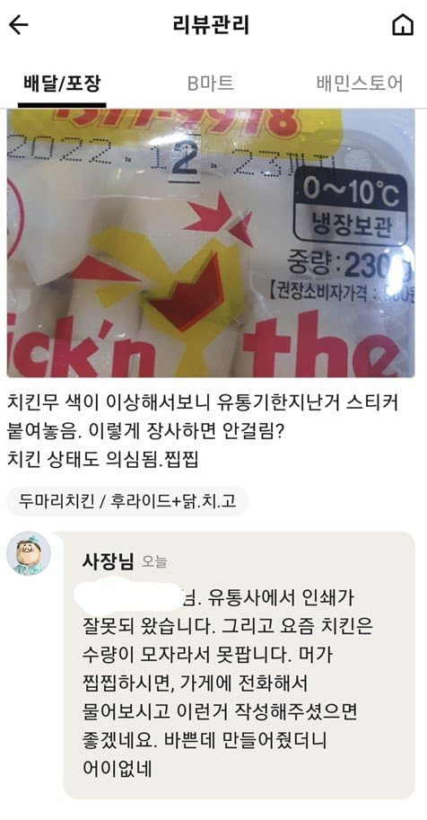
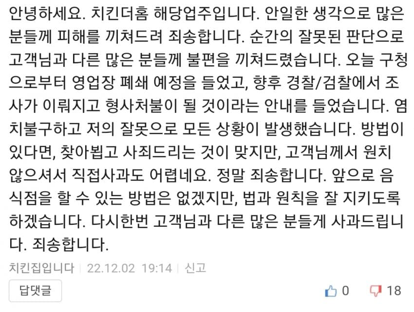

힘드신거 같아서 좀 쉬게 해드림
공무원 일 잘하네~
뭐 공짜로 만들어줬노?
치킨무 냉장보관 한달 못가지 않나?
한달을 속이긴 쉽지 않은데
한 일주일 지났는데 날짜 바꾸는 것보단 달 하나 바꾸는게 쉬우니까
미친건가 ㅋㅋㅋㅋㅋㅋㅋ
유통사 인쇄 ㅋㅋㅋㅋㅋㅋㅋ 유통사가 프린트잘못 해서 스티커 부쳐부쳐 하다가 공장닫고 뒤질일이 있나 ㅋㅋㅋ 변명은 씹 ㅋㅋㅋㅋㅋ
치킨더홈 경룡이 엄청 맛있게 먹었는데 어느샌가 점포가 거의 다 사라져서 아쉽
진짜 늙은이 새끼들은 왜 하나같이 저러냐
바쁜데 만들어 줬다
이런 사고방식은 2030에서 되게 찾기 힘든데
걍 까보면 속은 그 나라 사람이랑 똑같은놈들임
그만큼 경제나 시민의식의 발전이 빠른 나라였다고 보면 됨
그 노인들은 어렸을때 보고 배운 주변의 어른들이 다 그모양 그꼬라지였고
자라나면서 충분한 교육을 못받았기 때문에 그런 사고방식과 행동을 지금까지 유지하는거야
바쁜게문제시라니 안바쁘게해드렸습니다 ㅎ
당연히 잘한행동은 아니지만 처벌받고나서 더이상 요식업도 안할거같은데 저렇게 사과문 남기고 간거만해도 뭔가 용서해주고싶은 마음이 생기네
요새는 워낙 잘못을 지적해도 역으로 화를 내거나 끝까지 인정안하는 사람들이 많아서 그런가
이해가 안간다
처벌받고 시마이치는 입장에서 저렇게 공손하게 사과의 말씀을 올린다? 댓글보면 저럴분은 아닌것같은데...
직접사과하는척하면서 칼로 찌를려거
그래도 엔딩이 시원하네 ㅋㅋ
안녕하겠냐?
엔딩은 좋네 그래도
위아래 짤 같은치킨집은 맞음?
안바쁘게 해드렸습니다^^
인생 심심하게 됐누
바쁜데 만들어줬다는 뭐냐? ㅋㅋ
돈 안받은 것 처럼 말하네
안바빠지겠네ㅋㅋㅋ
만들어줬더니... 와 세네